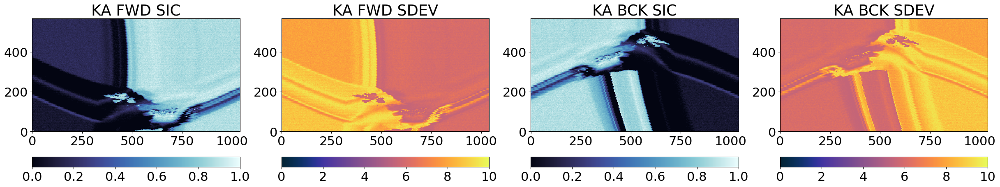
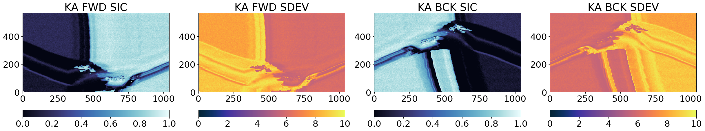
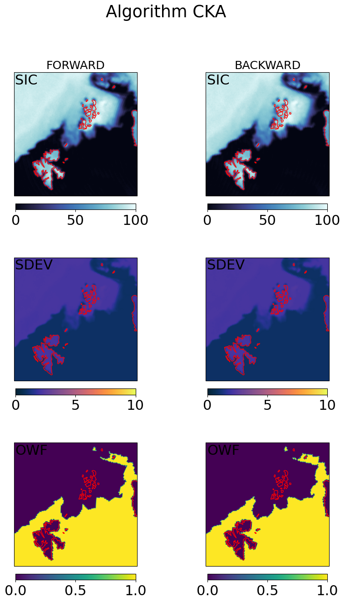
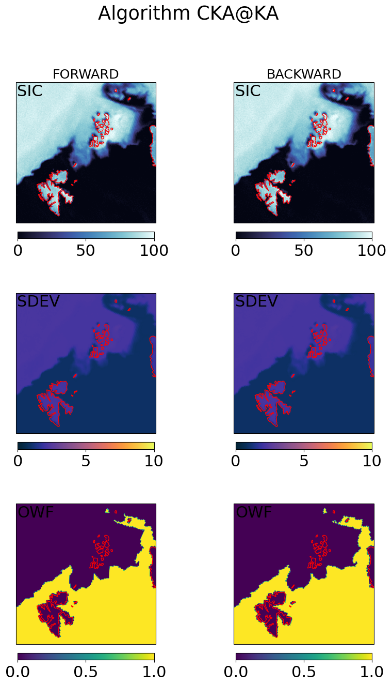
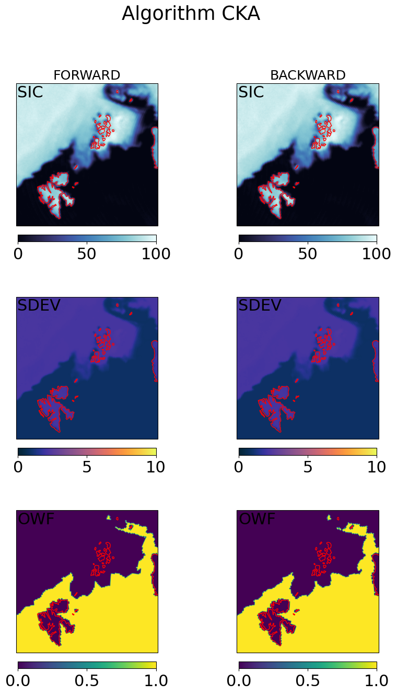
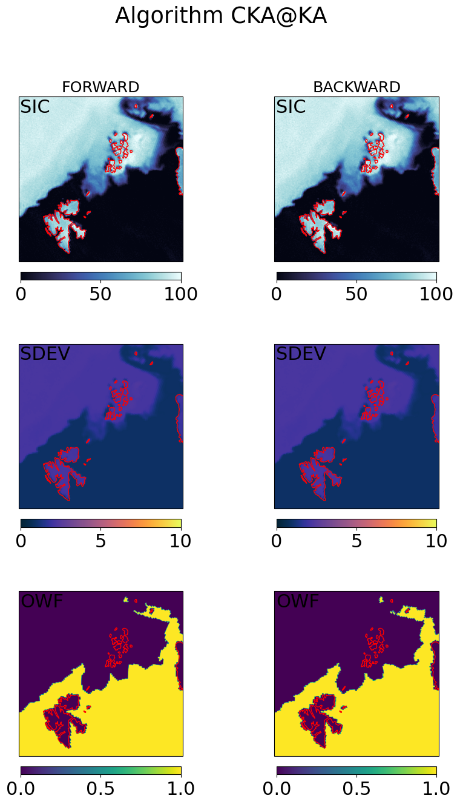

A Level-2 Sea Ice Concentration (SIC) and Sea Ice Edge (SIED) algorithm for CIMR#
This notebook implements a prototype for a Level-2 SIC3H and SIED3H algorithm for the CIMR mission.
We refer to the corresponding ATBD and especially the Baseline Algorithm Definition.
In particular, the figure below illustrates the overall concept of the processing:

from importlib import reload
import sys
import os
import numpy as np
import xarray as xr
from copy import deepcopy
from scipy.ndimage import gaussian_filter
from matplotlib import pylab as plt
import cmocean
import json
import cartopy.crs as ccrs
# local modules contain software code that implement the SIC algorithm
from sirrdp import rrdp_file
from pmr_sic import tiepoints as tp
from pmr_sic import algo as sic_algo
from pmr_sic import hybrid_algo
from pmr_sic import common
# prototype re-gridding toolbox to handle the L1B input
if '/Tools/' not in sys.path:
sys.path.insert(0, os.path.abspath('../..') + '/Tools/')
from tools import io_handler as io
from tools import collocation as coll
from tools import l2_format as l2
# top-level configuration for all plots
import matplotlib.pyplot as plt
plt.rcParams.update({'font.size': 10})
Parametrize the run#
Here we decide on some values that yield for the whole notebook
# This cell has a tag 'parameters' and is used for the CLI with papermill
# check python path run_CIMR_L2_Sea_Ice_Concentration_algorithm.py
l1b_path = '../data/input/SCEPS_l1b_sceps_geo_polar_scene_1_unfiltered_tot_minimal_nom_nedt_apc_tot_v2p1.nc'
aux_dir = '../data/aux/'
l2_dir = '../data/output/'
l2_grid = 'ease2-1.0km-testcard'
use_oza_adjust = True
tuning_method = 'CIMRL1B-ALLFEEDS'
# check the input parameters
l1b_scenes = ('devalgo_geometric', 'devalgo_radiometric', 'sceps_polar1')
if not os.path.isfile(l1b_path):
if l1b_path not in l1b_scenes:
raise ValueError("The input L1B file does not exist, and is not one of the pre-registred {}".format(l1b_scenes,))
if not os.path.isdir(l2_dir):
raise ValueError("The output directory {} does not exist.".format(l2_dir))
l2_grids = ('ease2-2.5km-arctic', 'ease2-1.0km-testcard')
if l2_grid not in l2_grids:
raise ValueError("The provided l2_grid parameter ({}) is not recognized.".format(l2_grid))
if not os.path.isdir(aux_dir):
raise ValueError("The auxiliary directory {} does not exist.".format(aux_dir))
if use_oza_adjust not in (False, True):
raise ValueError("Parameter use_oza_adjust should be a bool (True or False)")
tuning_methods = ('CCI-RRDP', 'CIMRL1B-ALLFEEDS', 'CIMRL1B-PERFEED')
if tuning_method not in tuning_methods:
raise ValueError("Algorithm tuning methods must be one of ({})".format(tuning_methods))
# Handle pre-defined L1B files
if l1b_path in l1b_scenes:
# the CLI gave a pre-defined string to the test scene (geometric, radiometr, sceps polar 1, etc...)
test_card_name = l1b_path
if l1b_path == 'devalgo_geometric':
# DEVALGO's simulated geometric test card
l1b_path = '/home/thomasl/Documents/DEVALGO/Simul_L1B_20230421/'
l1b_fn = 'W_PT-DME-Lisbon-SAT-CIMR-1B_C_DME_20230417T105425_LD_20280110T114800_20280110T115700_TN.nc'
elif l1b_path == 'devalgo_radiometric':
# DEVALGO's simulated radiometric test card
l1b_path = '/home/thomasl/Documents/DEVALGO/Simul_L1B_20230421/'
l1b_fn = 'W_PT-DME-Lisbon-SAT-CIMR-1B_C_DME_20230420T103323_LD_20280110T114800_20280110T115700_TN.nc'
elif l1b_path == 'sceps_polar1':
# SCEP's simulated radiometric test card
l1b_path = '/home/thomasl/Documents/DEVALGO/From_SCEPS_Aug2023/'
l1b_fn = 'Ref_scen_L1B_TDS/SCEPS/SCEPS_L1B_SCEPS_Geo_Polar_Scene_1/SCEPS_l1b_sceps_geo_polar_scene_1_unfiltered_tot_minimal_nom_nedt_apc_v2p0.nc'
else:
raise ValueError("Unknown test_card {}".format(l1b_path))
l1b_path = os.path.join(l1b_path, l1b_fn)
else:
if 'devalgo_test_scene_1' in os.path.basename(l1b_path):
test_card_name = 'devalgo_radiometric'
elif 'devalgo_test_scene_2' in os.path.basename(l1b_path):
test_card_name = 'devalgo_geometric'
elif 'sceps_geo_polar_scene_1':
test_card_name = 'sceps_polar1'
else:
test_card_name = 'unknown'
# print
print("Input L1B file: ", l1b_path)
print("Dir for aux data: ", aux_dir)
print("Ouput L2 dir: ", l2_dir)
print("Target L2 grid: ", l2_grid)
print("Use OZA adjusted TBs: ", use_oza_adjust)
print("Algorithm tuning method: ", tuning_method)
Input L1B file: ../data/input/SCEPS_l1b_sceps_geo_polar_scene_1_unfiltered_tot_minimal_nom_nedt_apc_tot_v2p1.nc
Dir for aux data: ../data/aux/
Ouput L2 dir: ../data/output/
Target L2 grid: ease2-1.0km-testcard
Use OZA adjusted TBs: True
Algorithm tuning method: CIMRL1B-ALLFEEDS
algo_version = '0.9.1'
rrdp_dir = './sirrdp'
area = 'nh'
algos = dict()
algos['CKA'] = {'channels':('tb06v', 'tb37v', 'tb37h'), 'target_band':'C'}
algos['KKA'] = {'channels':('tb19v', 'tb37v', 'tb37h'), 'target_band':'KU'}
algos['KA'] = {'channels':('tb37v', 'tb37h'), 'target_band':'KA'}
proj = 'nh'
Load the tuned CKA, KKA, and KA algorithms (from the Offline Preparations notebook)#
for alg in algos.keys():
if tuning_method == 'CIMRL1B-PERFEED':
algos[alg]['algo'] = []
# load 1 tuned SIC algo per FEED (target band)
for f in range(io.n_horns[algos[alg]['target_band']]):
json_fn = os.path.join(aux_dir,'{}_sic_{}.json'.format(alg.upper(), 'CIMRL1B-FEED{}'.format(f)))
print("Load tuned {} algo from {}".format(alg, json_fn))
if not os.path.exists(json_fn):
raise ValueError("Cannot find AUX parameter file for {} SIC:\n\t{}".format(alg, json_fn))
with open(json_fn) as fp:
algo_sic_params = json.load(fp)
algo_sic_params = common.numpify(algo_sic_params)
algos[alg]['algo'].append(hybrid_algo.HybridSICAlgo.from_dict(algo_sic_params))
else:
# load 1 tune SIC algo
json_fn = os.path.join(aux_dir,'{}_sic_{}.json'.format(alg.upper(), tuning_method))
print("Load tuned {} algo from {}".format(alg, json_fn))
if not os.path.exists(json_fn):
raise ValueError("Cannot find AUX parameter file for {} SIC:\n\t{}".format(alg, json_fn))
with open(json_fn) as fp:
algo_sic_params = json.load(fp)
algo_sic_params = common.numpify(algo_sic_params)
algos[alg]['algo'] = hybrid_algo.HybridSICAlgo.from_dict(algo_sic_params)
Load tuned CKA algo from ../data/aux/CKA_sic_CIMRL1B-ALLFEEDS.json
Load tuned KKA algo from ../data/aux/KKA_sic_CIMRL1B-ALLFEEDS.json
Load tuned KA algo from ../data/aux/KA_sic_CIMRL1B-ALLFEEDS.json
Step 1: Load the L1B files and prepare remapped TB arrays for each algo#
The three algorithms CKA, KKA, and KA combine different microwave channels (e.g. CKA combines C-Vpol, KA-Vpol, and KA-Hpol). Since each frequency channel is not sampled at the same location nor resolution, we must prepare location-matched, resolution-matched TB arrays for each algorithm.
In this version of the algorithm, we prepare TB arrays at the spatial resolution of the coarsest channel (e.g. we prepare C-Vpol, KA-Vpol, and KA-Hpol to the resolution of C-Vpol as input to the CKA algorithm).
We also split the L1B TB array in a forward and backward TB arrays.
We handle the collocation differently for the 3 algorithms:
CKAmixes TBs from different feeds, and we use a nearest-neighbour resampling;KKAandKAuse TBs from the same (dual freq.) feeds, and we use the along_arc resampling.
This remapping is handled by software in the Tools/ repository (a prototype CIMR Regridding Toolbox developed in the CIMR DEVALGO study).
# global definitions
tb_dict = {'tb01':'L','tb06':'C','tb10':'X','tb19':'KU','tb37':'KA',}
rev_tb_dict = {v:k for k,v in tb_dict.items()}
bands_needed = []
for alg in algos.keys():
bands_needed += algos[alg]['channels']
bands_needed = list(set([tb_dict[b[:-1]] for b in bands_needed]))
reload(io)
# read L1B. We only read the bands needed for the three algorithms
full_l1b = io.CIMR_L1B(l1b_path, selected_bands=bands_needed, keep_calibration_view=True,)
# if asked by the user, apply the (pre-computed) OZA adjustment fields for all bands
if use_oza_adjust:
full_l1b.apply_OZA_adjustment()
# align scanlines using the scan angle offset
full_l1b.align_arrays_to_start_at_zero_scan_angle()
# coarsen l1b samples along the scanlines with a kernel of 5 (horns are *not* combined)
ker = 5
coarsen_l1b = full_l1b.coarsen_along_scanlines(kernel=ker)
# split into forward / backward scan
fwd_l1b, bck_l1b = coarsen_l1b.split_forward_backward_scans(method='horn_scan_angle')
# Collocate the channels with a nearest neighbour approach. This step covers both the
# definition of the target grid, and the remapping. Use the correct 'target_band' for
# each algorithm.
#
# The collocation strategy differs for the algos:
# * CKA -> NN resampling to C
# * KKA -> along_arc
fwd_l1x = dict()
bck_l1x = dict()
for alg in algos.keys():
if alg == 'KKA' or alg == 'KA':
# along arc resampling.
_fwd_l1x = coll.collocate_channels_alongarc(fwd_l1b.data, algos[alg]['target_band'], )
_bck_l1x = coll.collocate_channels_alongarc(bck_l1b.data, algos[alg]['target_band'], )
# reshape by interleaving the feeds
fwd_l1x[alg] = coll.reshape_l1x_byinterleave(_fwd_l1x, view='forward')
bck_l1x[alg] = coll.reshape_l1x_byinterleave(_bck_l1x, view='backward')
else:
# CKA: first transform 3D arrays (scan, sample, feed) into 2D (scan_interleave_feed, sample), then
# NN resampling.
reshaped_fwd_l1b = fwd_l1b.reshape_interleave_feed()
reshaped_bck_l1b = bck_l1b.reshape_interleave_feed()
fwd_l1x[alg] = coll.collocate_channels(reshaped_fwd_l1b.data, algos[alg]['target_band'], method='nn')
bck_l1x[alg] = coll.collocate_channels(reshaped_bck_l1b.data, algos[alg]['target_band'], method='nn')
# prepare TBs in the structure expected as input to the algorithm
fwd_tbs = dict()
bck_tbs = dict()
for alg in algos.keys():
fwd_tbs[alg] = dict()
bck_tbs[alg] = dict()
for ch in algos[alg]['channels']:
band = tb_dict[ch[:-1]] + '_BAND'
varn = 'brightness_temperature_'+ch[-1]
fwd_tbs[alg][ch] = fwd_l1x[alg][band][varn].values
bck_tbs[alg][ch] = bck_l1x[alg][band][varn].values
# extract the lat/lon arrays for later use in the pan-sharpening
fwd_geo = dict()
bck_geo = dict()
for alg in algos.keys():
fwd_geo[alg] = dict()
bck_geo[alg] = dict()
for ll in ('lat','lon',):
fwd_geo[alg][ll] = fwd_l1x[alg]['geolocation'][ll].to_numpy()
bck_geo[alg][ll] = bck_l1x[alg]['geolocation'][ll].to_numpy()
# extract the orig_horn arrays (for the target band)
fwd_feed = dict()
bck_feed = dict()
for alg in algos.keys():
fwd_feed[alg] = fwd_l1x[alg][algos[alg]['target_band']+'_BAND'].orig_horn.to_numpy()
bck_feed[alg] = bck_l1x[alg][algos[alg]['target_band']+'_BAND'].orig_horn.to_numpy()
WARNING (align_arrays_to_start_at_zero_scan_angle): dim n_horns is not in 3rd pos for C:scan_angle_feeds_offsets_relative_to_reflector
WARNING (align_arrays_to_start_at_zero_scan_angle): dim n_horns is not in 3rd pos for C:apc_hv_hbs
WARNING (align_arrays_to_start_at_zero_scan_angle): dim n_horns is not in 3rd pos for C:apc_hv_ext
WARNING (align_arrays_to_start_at_zero_scan_angle): dim n_horns is not in 3rd pos for KU:scan_angle_feeds_offsets_relative_to_reflector
WARNING (align_arrays_to_start_at_zero_scan_angle): dim n_horns is not in 3rd pos for KU:apc_hv_hbs
WARNING (align_arrays_to_start_at_zero_scan_angle): dim n_horns is not in 3rd pos for KU:apc_hv_ext
WARNING (align_arrays_to_start_at_zero_scan_angle): dim n_horns is not in 3rd pos for KA:scan_angle_feeds_offsets_relative_to_reflector
WARNING (align_arrays_to_start_at_zero_scan_angle): dim n_horns is not in 3rd pos for KA:apc_hv_hbs
WARNING (align_arrays_to_start_at_zero_scan_angle): dim n_horns is not in 3rd pos for KA:apc_hv_ext
/home/thomasl/Work/DEVALGO/Tools/tools/collocation.py:145: RuntimeWarning: invalid value encountered in cast
coll_dict[w] = coll_dict[w].astype(dtypes[w])
/home/thomasl/Work/DEVALGO/Tools/tools/collocation.py:236: RuntimeWarning: invalid value encountered in cast
coll_dict[w] = coll_dict[w].astype(l1b_data[band][w].dtype)
Step 2: Apply the 3 algos to compute intermediate SICs#
This applies the three algorithms on their respective TB arrays (obtained from the L1B remapping of the TBs). The SIC algorithms are applied separately for the forward and backward scan of the swath.
fwd_res = dict()
bck_res = dict()
for alg in algos.keys():
# run the algorithm to compute SIC
if tuning_method == 'CIMRL1B-PERFEED':
# Run Nfeed algorithms, each on its feed scanlines, then reconstruct the 2D field
# prepare the 2D result fields (filled with nans)
_ch0 = algos[alg]['channels'][0]
_fwd_sic = np.ones_like(fwd_tbs[alg][_ch0]) * np.nan
_fwd_sdev = np.ones_like(fwd_tbs[alg][_ch0]) * np.nan
_fwd_dal = np.ones_like(fwd_tbs[alg][_ch0]) * np.nan
_fwd_owf = np.ones_like(fwd_tbs[alg][_ch0]).astype('int16') * -1
_bck_sic = np.ones_like(bck_tbs[alg][_ch0]) * np.nan
_bck_sdev = np.ones_like(bck_tbs[alg][_ch0]) * np.nan
_bck_dal = np.ones_like(bck_tbs[alg][_ch0]) * np.nan
_bck_owf = np.ones_like(bck_tbs[alg][_ch0]).astype('int16') * -1
for f in range(io.n_horns[algos[alg]['target_band']]):
# prepare TBs with nans everywhere expect for the current feed
_fwd_tbs = deepcopy(fwd_tbs[alg])
_bck_tbs = deepcopy(bck_tbs[alg])
for ch in algos[alg]['channels']:
_fwd_tbs[ch][fwd_feed[alg]!=f] = np.nan
_bck_tbs[ch][bck_feed[alg]!=f] = np.nan
# run the feed-specific algorithm
_fwd_sicf, _fwd_sdevf, _fwd_dalf, _fwd_owff = algos[alg]['algo'][f].compute_sic(_fwd_tbs)
_bck_sicf, _bck_sdevf, _bck_dalf, _bck_owff = algos[alg]['algo'][f].compute_sic(_bck_tbs)
# place the results into the 2D fields
_fwd_sic[fwd_feed[alg]==f] = _fwd_sicf[fwd_feed[alg]==f]
_fwd_sdev[fwd_feed[alg]==f] = _fwd_sdevf[fwd_feed[alg]==f]
_fwd_dal[fwd_feed[alg]==f] = _fwd_dalf[fwd_feed[alg]==f]
_fwd_owf[fwd_feed[alg]==f] = _fwd_owff[fwd_feed[alg]==f]
_bck_sic[bck_feed[alg]==f] = _bck_sicf[bck_feed[alg]==f]
_bck_sdev[bck_feed[alg]==f] = _bck_sdevf[bck_feed[alg]==f]
_bck_dal[bck_feed[alg]==f] = _bck_dalf[bck_feed[alg]==f]
_bck_owf[bck_feed[alg]==f] = _bck_owff[bck_feed[alg]==f]
# store these results in a SICAlgoResults object
fwd_res[alg] = sic_algo.SICAlgoResult(_fwd_sic, _fwd_sdev, _fwd_dal, _fwd_owf)
bck_res[alg] = sic_algo.SICAlgoResult(_bck_sic, _bck_sdev, _bck_dal, _bck_owf)
else:
# Run the algorithm on the 2D fields directly
fwd_res[alg] = algos[alg]['algo'].compute_sic(fwd_tbs[alg])
bck_res[alg] = algos[alg]['algo'].compute_sic(bck_tbs[alg])
# Simple visualization in swath L1X geometry
cmap = cmocean.cm.ice
ucmap = cmocean.cm.thermal
vmin, vmax = (0, 1)
umin, umax = (0, 10)
fig = plt.figure(figsize=(30,16))
axF = fig.add_subplot(1,4,1)
cF = axF.imshow(fwd_res[alg].sic, vmin=vmin, vmax=vmax, interpolation = 'none', origin='lower', cmap=cmap)
axF.set_title(alg + " " + "FWD" + " " + "SIC")
plt.colorbar(cF,orientation='horizontal', pad=0.05)
#ax.set_xticks([]); ax.set_yticks([])
ax = fig.add_subplot(1,4,2, sharex=axF, sharey=axF)
uF = ax.imshow(fwd_res[alg].sdev, vmin=umin, vmax=umax, interpolation = 'none', origin='lower', cmap=ucmap)
ax.set_title(alg + " " + "FWD" + " " + "SDEV")
plt.colorbar(uF,orientation='horizontal', pad=0.05)
#ax.set_xticks([]); ax.set_yticks([])
axB = fig.add_subplot(1,4,3)
cB = axB.imshow(bck_res[alg].sic, vmin=vmin, vmax=vmax, interpolation = 'none', origin='lower', cmap=cmap)
axB.set_title(alg + " " + "BCK" + " " + "SIC")
plt.colorbar(cB,orientation='horizontal', pad=0.05)
#ax.set_xticks([]); ax.set_yticks([])
ax = fig.add_subplot(1,4,4, sharex=axB, sharey=axB)
uB=ax.imshow(bck_res[alg].sdev, vmin=umin, vmax=umax, interpolation = 'none', origin='lower', cmap=ucmap)
ax.set_title(alg + " " + "BCK" + " " + "SDEV")
plt.colorbar(uB,orientation='horizontal', pad=0.05)
#ax.set_xticks([]); ax.set_yticks([])

 

From the images above, it is clear that the three algorithms see high and low concentrations in the same locations in the Test Card, which means they are returning related SIC fields that we can later combine. The uncertainties (SDEV) are as expected lower for CKA than for KKA that are lower than those of KA.
Step 3 : Pan-sharpening and computation of “final” Level-2 SIC#
The third step deploys a pan-sharpening methodology to combine pairs of intermediate SICs into the final Level-2 SICs. In our case, the ‘base’ image can be the high-accuracy / coarse-resolution intermediate SIC from CKA and the ‘sharpener’ image can be the low-accuracy / fine-resolution intermediate SIC from KA. This results in a final SIC named CKA@KA.
The ATBD calls for more such pan-sharpening to happen, but for the time being we focus on CKA@KA.
The pansharpening equation is simply $\( \begin{array}{lc} C_{ER} &=& \textrm{Remap}_{HR}(C_{LR}) + \Delta_{edges} \\ &=& \textrm{Remap}_{HR}(C_{LR}) + ( C_{HR} - C_{HR, blurred} ) \\ \end{array} \)$
where suffix “ER” refers to enhanced resolution (the final SIC), “LR” to “low resolution” (the ‘base’ SIC to be pan-sharpened), and “HR” to “high resolution” (the ‘sharpener’ SIC). The equation also involves \(C_{HR, blurred}\) which is C_{HR} blurred to the spatial resolution of \(C_{LR}\). The quantity \(( C_{HR} - C_{HR, blurred})\) is sometimes referred to as a \(\Delta_{edges}\) as it takes small values everywhere but in the regions where \(C_{HR}\) exhibits sharp gradients (e.g. in the Marginal Ice Zone). The \(\textrm{Remap}_{HR}\) operator remaps the location (only the location, not the resolution) of \(C_{LR}\) to those of \(C_{HR}\) to enable adding the two fields together. The resulting SIC field, \(C_{ER}\) is thus at the locations of \(C_{HR}\), with the spatial resolution of \(C_{HR}\) and the accuracy of \(C_{LR}\) (if the pan-sharpening works perfectly).
There are thus 3 steps for building the pan-sharpened SIC \(C_{ER}\):
Regrid ‘base’ SIC (coarse resolution) to ‘sharpener’ SIC (high resolution) grid
Prepare the ‘blurred’ sharpener SIC field
Compute \(\Delta_{edges}\) and finally \(C_{ER}\)
Step 3.1 Regrid ‘base’ SIC (coarse resolution) to ‘sharpener’ SIC (high resolution) grid#
A first intermediate step is to have the base SIC field (e.g. CKA) on the same grid as the sharpener grid KA. For this we use some of our collocation tools in the toolbox.
algo = 'CKA@KA'
base, sharpener = algo.split('@')
reload(coll)
# extract target and source geometries
fwd_trg_lon = fwd_geo[sharpener]['lon']
fwd_trg_lat = fwd_geo[sharpener]['lat']
fwd_src_lon = fwd_geo[base]['lon']
fwd_src_lat = fwd_geo[base]['lat']
bck_trg_lon = bck_geo[sharpener]['lon']
bck_trg_lat = bck_geo[sharpener]['lat']
bck_src_lon = bck_geo[base]['lon']
bck_src_lat = bck_geo[base]['lat']
# Prepare a stack of the data to be regridded (e.g. SIC and SDEV)
what = ('sic','sdev','dal','owf')
fwd_stack_shape = tuple(list(fwd_src_lat.shape) + [len(what),])
bck_stack_shape = tuple(list(bck_src_lat.shape) + [len(what),])
fwd_src_stack = np.empty(fwd_stack_shape)
bck_src_stack = np.empty(bck_stack_shape)
for iw, w in enumerate(what):
fwd_src_stack[...,iw] = fwd_res[base].get(w)
bck_src_stack[...,iw] = bck_res[base].get(w)
# regrid and get _bAs (base @ sharpener grid),
_fwd_bAs = coll._regrid_fields(fwd_trg_lon, fwd_trg_lat, fwd_src_lon, fwd_src_lat, fwd_src_stack)
_bck_bAs = coll._regrid_fields(bck_trg_lon, bck_trg_lat, bck_src_lon, bck_src_lat, bck_src_stack)
# store in an object
fwd_res[algo + '(bAs)'] = sic_algo.SICAlgoResult(_fwd_bAs[...,0], _fwd_bAs[...,1], _fwd_bAs[...,2], _fwd_bAs[...,3])
bck_res[algo + '(bAs)'] = sic_algo.SICAlgoResult(_bck_bAs[...,0], _bck_bAs[...,1], _bck_bAs[...,2], _bck_bAs[...,3])
# The bAs now has the same shape as the sharpener
assert(fwd_res[sharpener].sic.shape == fwd_res[algo+'(bAs)'].sic.shape)
assert(bck_res[sharpener].sic.shape == bck_res[algo+'(bAs)'].sic.shape)
Step 3.2 Prepare the ‘blurred’ sharpener SIC field#
Second intermediate step is to prepare a blurred version of the sharpener SIC field, keeping it in its own grid (each grid point in the blurred SIC field is computed from the surrounding pixels in the field). The aim is to blur the ‘sharpener’ SIC until a resolution similar to that of the ‘base’ SIC (but to stay in the ‘sharpener’ grid).
reload(coll)
# extract target and source geometries (the same: we stay in the sharpener's grid)
fwd_trg_lon = fwd_geo[sharpener]['lon']
fwd_trg_lat = fwd_geo[sharpener]['lat']
fwd_src_lon = fwd_geo[sharpener]['lon']
fwd_src_lat = fwd_geo[sharpener]['lat']
bck_trg_lon = bck_geo[sharpener]['lon']
bck_trg_lat = bck_geo[sharpener]['lat']
bck_src_lon = bck_geo[sharpener]['lon']
bck_src_lat = bck_geo[sharpener]['lat']
# Prepare a stack of the data to be regridded (only the SIC)
what = ('sic',)
fwd_stack_shape = tuple(list(fwd_src_lat.shape) + [len(what),])
bck_stack_shape = tuple(list(bck_src_lat.shape) + [len(what),])
fwd_src_stack = np.empty(fwd_stack_shape)
bck_src_stack = np.empty(bck_stack_shape)
for iw, w in enumerate(what):
fwd_src_stack[...,iw] = fwd_res[sharpener].get(w)
bck_src_stack[...,iw] = bck_res[sharpener].get(w)
# regrid and get _sbl (sharpener blurred)
params = {'method':'gauss', 'sigmas':25000, 'neighbours':55}
_fwd_sbl = coll._regrid_fields(fwd_trg_lon, fwd_trg_lat, fwd_src_lon, fwd_src_lat, fwd_src_stack, params=params)
_bck_sbl = coll._regrid_fields(bck_trg_lon, bck_trg_lat, bck_src_lon, bck_src_lat, bck_src_stack, params=params)
# store in an object
fwd_res[algo + '(blur)'] = sic_algo.SICAlgoResult(_fwd_sbl[...,0], fwd_res[sharpener].sdev, fwd_res[sharpener].dal, fwd_res[sharpener].owf)
bck_res[algo + '(blur)'] = sic_algo.SICAlgoResult(_bck_sbl[...,0], bck_res[sharpener].sdev, bck_res[sharpener].dal, bck_res[sharpener].owf)
/home/thomasl/mambaforge/envs/py311/lib/python3.11/site-packages/pyresample/kd_tree.py:261: UserWarning: Possible more than 55 neighbours within 62500.0 m for some data points
get_neighbour_info(source_geo_def,
Step 3.3 Compute \(\Delta_{edges}\) and finally \(C_{ER}\)#
This is the final step of the pan-sharpening. We first compute \(\Delta_{edges} = C_{HR} - C_{HR, blurred}\), then the final enhance-resolution SIC \(C_{ER}\).
# compute the delta edges
_fwd_delta = fwd_res[sharpener].sic - fwd_res[algo + '(blur)'].sic
_bck_delta = bck_res[sharpener].sic - bck_res[algo + '(blur)'].sic
# store in an object (intermediate result, we store it only for visualization in the notebook)
_fwd_zeros = np.zeros_like(_fwd_delta)
_bck_zeros = np.zeros_like(_bck_delta)
fwd_res[algo + '(delta)'] = sic_algo.SICAlgoResult(_fwd_delta, _fwd_zeros, _fwd_zeros, _fwd_zeros)
bck_res[algo + '(delta)'] = sic_algo.SICAlgoResult(_bck_delta, _bck_zeros, _bck_zeros, _bck_zeros)
# compute final pan-sharpened SIC
_fwd_er = fwd_res[algo+'(bAs)'].sic + _fwd_delta
_bck_er = bck_res[algo+'(bAs)'].sic + _bck_delta
# store in an object
_fwd_zeros = np.zeros_like(_fwd_delta)
_bck_zeros = np.zeros_like(_bck_delta)
fwd_res[algo] = sic_algo.SICAlgoResult(_fwd_er, fwd_res[algo+'(bAs)'].sdev, _fwd_zeros, fwd_res[algo+'(bAs)'].owf)
bck_res[algo] = sic_algo.SICAlgoResult(_bck_er, bck_res[algo+'(bAs)'].sdev, _bck_zeros, bck_res[algo+'(bAs)'].owf)
# Simple visualization in swath L1X geometry
for alg in (algo + '(bAs)', sharpener, algo + '(blur)', algo + '(delta)', algo):
cmap = cmocean.cm.ice
ucmap = cmocean.cm.thermal
vmin, vmax = (0, 100)
umin, umax = (0, 10)
if 'delta' in alg:
cmap = cmocean.cm.balance
ucmap = cmap
vmin, vmax = (-30, 30)
umin, umax = (vmin, vmax)
fig = plt.figure(figsize=(30,16))
axF = fig.add_subplot(1,4,1)
cF = axF.imshow(100*fwd_res[alg].sic, vmin=vmin, vmax=vmax, interpolation = 'none', origin='lower', cmap=cmap)
axF.set_title(alg + " " + "FWD" + " " + "SIC")
plt.colorbar(cF,orientation='horizontal', pad=0.05)
#ax.set_xticks([]); ax.set_yticks([])
ax = fig.add_subplot(1,4,2, sharex=axF, sharey=axF)
uF = ax.imshow(fwd_res[alg].sdev, vmin=umin, vmax=umax, interpolation = 'none', origin='lower', cmap=ucmap)
ax.set_title(alg + " " + "FWD" + " " + "SDEV")
plt.colorbar(uF,orientation='horizontal', pad=0.05)
#ax.set_xticks([]); ax.set_yticks([])
axB = fig.add_subplot(1,4,3)
cB = axB.imshow(100*bck_res[alg].sic, vmin=vmin, vmax=vmax, interpolation = 'none', origin='lower', cmap=cmap)
axB.set_title(alg + " " + "BCK" + " " + "SIC")
plt.colorbar(cB,orientation='horizontal', pad=0.05)
#ax.set_xticks([]); ax.set_yticks([])
ax = fig.add_subplot(1,4,4, sharex=axB, sharey=axB)
uB=ax.imshow(bck_res[alg].sdev, vmin=umin, vmax=umax, interpolation = 'none', origin='lower', cmap=ucmap)
ax.set_title(alg + " " + "BCK" + " " + "SDEV")
plt.colorbar(uB,orientation='horizontal', pad=0.05)
#ax.set_xticks([]); ax.set_yticks([])
axF.set_xlim(400,600)
axF.set_ylim(25,200)
axB.set_xlim(350,550)
axB.set_ylim(325,500)
plt.show()
Step 4 : Combine forward and backward scans#
For the time being, we resample the SICs from the forward and the backward scans (separately) to an EASE2 grid, then combine them on the grid. We define a status_flag to record if a particular grid cell is from forward+backward scans, only forward, or only backward.
Note: in this implementation we only regrid to the Northern Hemisphere grid because we know that the simulated L1B orbit does not extend over the Southern Hemisphere. In general, orbits can cover both hemisphere and we will have to grid each orbit both to an NH and and SH grid.
Step 4.1 : Load the grid definition from parameter file#
import pyresample as pr
from pyresample import parse_area_file
if l2_grid == 'ease2-2.5km-arctic':
grid_def_file = os.path.join('grids_py.def')
grid_n = 'nh-ease2-025'
adef = parse_area_file(grid_def_file, grid_n)[0]
trg_lon, trg_lat = adef.get_lonlats()
trg_spacing = 2500
elif l2_grid == 'ease2-1.0km-testcard':
# load the area definition from a yaml file
yaml_file = './testcard_adef.yaml'
adef = pr.load_area(yaml_file, 'crs')
trg_lon, trg_lat = adef.get_lonlats()
trg_spacing = 1000
print(adef)
## IF you do not have the yaml file, this is how it can be created
## path to the polar testcard netCDF file to load the projection information
#tc_fn = '/home/thomasl/Downloads/test_scene_1_compressed_lowres.nc'
#
#ds = xr.open_dataset(tc_fn)
#
#adef_tc, _ = pr.utils.load_cf_area(ds, variable='L_band_H', y='y', x='x')
#trg_spacing = 1000
#trg_lon, trg_lat = adef_tc.get_lonlats()
#
#file_lon = ds['Longitude'].data
#file_lat = ds['Latitude'].data
#trg_spacing = 1000
#print('max difference in lon:', abs(file_lon-trg_lon).max())
#print('min difference in lat:', abs(file_lat-trg_lat).max())
#
#print("pyresample AreaDefinition for the TestCard:")
#print(adef_tc)
#adef = adef_tc
#
#adef.dump(filename=yaml_file)
else:
raise ValueError("Unknown target grid for the gridding: {}".format(l2_grid))
Area ID: crs
Description: crs
Projection: {'datum': 'WGS84', 'lat_0': '90', 'lon_0': '0', 'no_defs': 'None', 'proj': 'laea', 'type': 'crs', 'units': 'm', 'x_0': '0', 'y_0': '0'}
Number of columns: 1400
Number of rows: 1400
Area extent: (0.0, -100000.0, 1400000.0, -1500000.0)
Step 4.2 : Grid the forward and backward fields separately#
fwd_grd = dict()
bck_grd = dict()
# SICs to grid
galgs = ('KA', 'KKA', 'CKA', 'CKA@KA')
for galg in galgs:
print("Grid FWD and BCK fields for {}".format(galg))
if '@' in galg:
geo_n = galg.split('@')[1]
else:
geo_n = galg
# this is the mean spacing of the SIC field, which is about 4000m for KA and K
src_spacing = 4000
if galg == 'CKA':
src_spacing = 10000
# extract source geometries (those of the 'sharpener' field)
fwd_src_lon = fwd_geo[geo_n]['lon']
fwd_src_lat = fwd_geo[geo_n]['lat']
bck_src_lon = bck_geo[geo_n]['lon']
bck_src_lat = bck_geo[geo_n]['lat']
# Prepare a stack of the data to be regridded (SIC and sdev)
what = ('sic','sdev','owf')
fwd_stack_shape = tuple(list(fwd_src_lat.shape) + [len(what),])
bck_stack_shape = tuple(list(bck_src_lat.shape) + [len(what),])
fwd_src_stack = np.empty(fwd_stack_shape)
bck_src_stack = np.empty(bck_stack_shape)
for iw, w in enumerate(what):
fwd_src_stack[...,iw] = fwd_res[galg].get(w)
bck_src_stack[...,iw] = bck_res[galg].get(w)
# regrid to the EASE2 grid
params = {'method':'gauss', 'sigmas':max(trg_spacing,src_spacing/2.), 'neighbours':8}
_fwd_grid = coll._regrid_fields(trg_lon, trg_lat, fwd_src_lon, fwd_src_lat, fwd_src_stack, params=params)
_bck_grid = coll._regrid_fields(trg_lon, trg_lat, bck_src_lon, bck_src_lat, bck_src_stack, params=params)
# store in an object
_grd_zeros = np.zeros_like(trg_lon)
fwd_grd[galg] = sic_algo.SICAlgoResult(np.ma.masked_invalid(_fwd_grid[:,:,0]),
np.ma.masked_invalid(_fwd_grid[:,:,1]),
_grd_zeros,
np.ma.masked_invalid(_fwd_grid[:,:,2]))
bck_grd[galg] = sic_algo.SICAlgoResult(np.ma.masked_invalid(_bck_grid[:,:,0]),
np.ma.masked_invalid(_bck_grid[:,:,1]),
_grd_zeros,
np.ma.masked_invalid(_bck_grid[:,:,2]))
Grid FWD and BCK fields for KA
/home/thomasl/mambaforge/envs/py311/lib/python3.11/site-packages/pyresample/kd_tree.py:261: UserWarning: Possible more than 8 neighbours within 5000.0 m for some data points
get_neighbour_info(source_geo_def,
Grid FWD and BCK fields for KKA
Grid FWD and BCK fields for CKA
/home/thomasl/mambaforge/envs/py311/lib/python3.11/site-packages/pyresample/kd_tree.py:261: UserWarning: Possible more than 8 neighbours within 12500.0 m for some data points
get_neighbour_info(source_geo_def,
Grid FWD and BCK fields for CKA@KA
# visualization of the gridded fields
cmap = cmocean.cm.ice
ucmap = cmocean.cm.thermal
ocmap = plt.colormaps.get_cmap('viridis')
vmin, vmax = (0, 100)
umin, umax = (0, 10)
omin, omax = (0, 1)
cart_crs = adef.to_cartopy_crs()
for galg in galgs:
fig, ax = plt.subplots(nrows=3, ncols=2, sharex=True, sharey=True, figsize=(10,15),
subplot_kw=dict(projection=cart_crs))
fig.suptitle("Algorithm {}".format(galg))
# first row : SICs
c = ax[0,0].imshow(100*fwd_grd[galg].sic, transform=cart_crs, extent=cart_crs.bounds, origin='upper',
cmap=cmap,vmin=vmin,vmax=vmax)
ax[0,0].coastlines(color='red')
ax[0,0].set_title('FORWARD', fontsize='small')
ax[0,0].text(0.01,0.99,'SIC',va='top',transform=ax[0,0].transAxes)
plt.colorbar(c,orientation='horizontal', pad=0.05, shrink=0.75)
c = ax[0,1].imshow(100*bck_grd[galg].sic, transform=cart_crs, extent=cart_crs.bounds, origin='upper',
cmap=cmap,vmin=vmin,vmax=vmax)
ax[0,1].coastlines(color='red')
ax[0,1].set_title('BACKWARD', fontsize='small')
ax[0,1].text(0.01,0.99,'SIC',va='top',transform=ax[0,1].transAxes)
plt.colorbar(c,orientation='horizontal', pad=0.05, shrink=0.75)
# second row : SDEVs
c = ax[1,0].imshow(fwd_grd[galg].sdev, transform=cart_crs, extent=cart_crs.bounds, origin='upper',
cmap=ucmap,vmin=umin,vmax=umax)
ax[1,0].coastlines(color='red')
ax[1,0].text(0.01,0.99,'SDEV',va='top',transform=ax[1,0].transAxes)
plt.colorbar(c,orientation='horizontal', pad=0.05, shrink=0.75)
c=ax[1,1].imshow(bck_grd[galg].sdev, transform=cart_crs, extent=cart_crs.bounds, origin='upper',
cmap=ucmap,vmin=umin,vmax=umax)
ax[1,1].coastlines(color='red')
ax[1,1].text(0.01,0.99,'SDEV',va='top',transform=ax[1,1].transAxes)
plt.colorbar(c,orientation='horizontal', pad=0.05, shrink=0.75)
# second row : OWF
c = ax[2,0].imshow(fwd_grd[galg].owf, transform=cart_crs, extent=cart_crs.bounds, origin='upper',
cmap=ocmap,vmin=omin,vmax=omax)
ax[2,0].coastlines(color='red')
ax[2,0].text(0.01,0.99,'OWF',va='top',transform=ax[2,0].transAxes)
plt.colorbar(c,orientation='horizontal', pad=0.05, shrink=0.75)
c=ax[2,1].imshow(bck_grd[galg].owf, transform=cart_crs, extent=cart_crs.bounds, origin='upper',
cmap=ocmap,vmin=omin,vmax=omax)
ax[2,1].coastlines(color='red')
ax[2,1].text(0.01,0.99,'OWF',va='top',transform=ax[2,1].transAxes)
plt.colorbar(c,orientation='horizontal', pad=0.05, shrink=0.75)
plt.show()
 



Step 4.3 : Combine the forward and backward fields#
# we call the result, the "merged" sic:
mrg_grd = dict()
mrg_grd_raw = dict()
mrg_grd_flags = dict()
mrg_grd_flag_comment = "0: no_data, 1: fwd_only, 2: bck_only, 3: fwd_and_bck"
for galg in galgs:
# have a flag to indicate where the forward and backward scans contributed
mrg_grd_flag = np.zeros(fwd_grd[galg].sic.shape, dtype='i8')
_fwd_valid = ~(fwd_grd[galg].sic.mask)
_bck_valid = ~(bck_grd[galg].sic.mask)
mrg_grd_flag[_fwd_valid * _bck_valid] = 3
mrg_grd_flag[_bck_valid * ~_fwd_valid] = 2
mrg_grd_flag[_fwd_valid * ~_bck_valid] = 1
# we do a naive merge (arithmetic mean) for now because the uncertainties
# in forward and backward fields will be quite similar.
_mrg_grd_sic = 0.5 * (fwd_grd[galg].sic + bck_grd[galg].sic)
_mrg_grd_sic[_fwd_valid * ~_bck_valid] = fwd_grd[galg].sic[_fwd_valid * ~_bck_valid]
_mrg_grd_sic[_bck_valid * ~_fwd_valid] = bck_grd[galg].sic[_bck_valid * ~_fwd_valid]
# the uncertainties in the forward and backward SIC fields are highly correlated,
# thus at the first order the uncertainties are the mean uncertainty (in variance).
# This should be revisited e.g. to reduce the uncertainty due to NeDT (which is small
# wrt that due to tie-points).
_mrg_grd_var = 0.5 * (fwd_grd[galg].sdev**2 + bck_grd[galg].sdev**2)
_mrg_grd_var[_fwd_valid * ~_bck_valid] = fwd_grd[galg].sdev[_fwd_valid * ~_bck_valid]**2
_mrg_grd_var[_bck_valid * ~_fwd_valid] = bck_grd[galg].sdev[_bck_valid * ~_fwd_valid]**2
_mrg_grd_sdev = _mrg_grd_var**0.5
# Combine the OWF with a OR() operator : if one view detected a target as open-water, trust that.
_mrg_grd_owf = np.zeros(fwd_grd[galg].sic.shape, dtype='i4')
_mrg_grd_owf = np.ma.where( (fwd_grd[galg].owf + bck_grd[galg].owf) >= 1, 1, 0)
_mrg_grd_owf[_fwd_valid * ~_bck_valid] = fwd_grd[algo].owf[_fwd_valid * ~_bck_valid]
_mrg_grd_owf[_bck_valid * ~_fwd_valid] = bck_grd[algo].owf[_bck_valid * ~_fwd_valid]
# Filter the SIC with the (gridded OWF), and apply the thresholds.
print("FILTER AND THRESHOLD THE 'raw' {} SIC:".format(galg))
_mrg_grd_fsic = _mrg_grd_sic.copy()
_mrg_grd_fsic[_mrg_grd_owf > 0] = 0.
_mrg_grd_fsic[_mrg_grd_fsic < 0] = 0.
_mrg_grd_fsic[_mrg_grd_fsic > 1] = 1.
print("Range of 'raw' SIC (before filtering and thesholding): [{:.2f}:{:.2f}]".format(
_mrg_grd_sic.min(), _mrg_grd_sic.max()))
print("Range of 'filtered' SIC (after filtering and thesholding): [{:.2f}:{:.2f}]".format(
_mrg_grd_fsic.min(), _mrg_grd_fsic.max()))
# store in an object (we store the filtered SIC, but keep the raw SIC as well)
mrg_grd[galg] = sic_algo.SICAlgoResult(_mrg_grd_fsic, _mrg_grd_sdev, _grd_zeros, _mrg_grd_owf)
mrg_grd_flags[galg] = mrg_grd_flag
mrg_grd_raw[galg] = _mrg_grd_sic
FILTER AND THRESHOLD THE 'raw' KA SIC:
Range of 'raw' SIC (before filtering and thesholding): [-0.25:1.00]
Range of 'filtered' SIC (after filtering and thesholding): [0.00:1.00]
FILTER AND THRESHOLD THE 'raw' KKA SIC:
Range of 'raw' SIC (before filtering and thesholding): [-0.07:1.01]
Range of 'filtered' SIC (after filtering and thesholding): [0.00:1.00]
FILTER AND THRESHOLD THE 'raw' CKA SIC:
Range of 'raw' SIC (before filtering and thesholding): [-0.03:1.00]
Range of 'filtered' SIC (after filtering and thesholding): [0.00:1.00]
FILTER AND THRESHOLD THE 'raw' CKA@KA SIC:
Range of 'raw' SIC (before filtering and thesholding): [-0.23:1.13]
Range of 'filtered' SIC (after filtering and thesholding): [0.00:1.00]
# visualize / plot
for galg in galgs:
fig, ax = plt.subplots(nrows=2, ncols=2, sharex=True, sharey=True, figsize=(16,16), subplot_kw=dict(projection=cart_crs))
fig.suptitle("Algorithm {}".format(galg))
# first : SICs
c = ax[0,0].imshow(100*mrg_grd[galg].sic, transform=cart_crs, extent=cart_crs.bounds, origin='upper',
cmap=cmap,vmin=vmin,vmax=vmax)
ax[0,0].coastlines(color='red')
ax[0,0].text(0.01,0.99,'SIC (filtered)',va='top',fontsize=14,transform=ax[0,0].transAxes)
plt.colorbar(c,orientation='horizontal', pad=0.05, shrink=0.8)
# second : SDEVs
c = ax[0,1].imshow(mrg_grd[galg].sdev, transform=cart_crs, extent=cart_crs.bounds, origin='upper',
cmap=ucmap,vmin=umin,vmax=umax)
ax[0,1].coastlines(color='red')
ax[0,1].text(0.01,0.99,'SDEV',va='top',fontsize=14,transform=ax[0,1].transAxes)
plt.colorbar(c,orientation='horizontal', pad=0.05, shrink=0.8)
# third : FLAG
c = ax[1,0].imshow(mrg_grd_flags[galg], transform=cart_crs, extent=cart_crs.bounds, origin='upper',vmin=0,vmax=3)
ax[1,0].coastlines(color='red')
ax[1,0].text(0.01,0.99,'FLAG',va='top',fontsize=14,transform=ax[1,0].transAxes,color='w')
plt.colorbar(c,orientation='horizontal', pad=0.05, shrink=0.8,)
# fourth : OWF
c = ax[1,1].imshow(mrg_grd[galg].owf, transform=cart_crs, extent=cart_crs.bounds, origin='upper',
cmap=ocmap, vmin=omin, vmax=omax)
ax[1,1].coastlines(color='red')
ax[1,1].text(0.01,0.99,'OWF',va='top',fontsize=14,transform=ax[1,1].transAxes,)
plt.colorbar(c,orientation='horizontal', pad=0.05, shrink=0.8,)
plt.show()
Step 5: Compute the sea-ice EDGE field#
SIED (Sea Ice Edge) is computed from SIC with a simple threshold at SIC = 15%. It is a binary water / ice field.
Importantly, it uses the filtered SIC of CKA@KA as input.
In this version of the algorithm, we process it on the merged gridded output, but it could also be computed at an earlier stage, including in swath projection.
sied_mrg_grd = np.ma.where(mrg_grd['CKA@KA'].sic >= 0.15, 1, 0).astype('int16')
fig, ax = plt.subplots(figsize=(8,8), subplot_kw=dict(projection=cart_crs))
c = ax.imshow(sied_mrg_grd, transform=cart_crs, extent=cart_crs.bounds, origin='upper',
cmap=cmap,vmin=0, vmax=1)
ax.coastlines(color='red')
ax.text(0.01,0.99,'SIED',va='top',fontsize=14,transform=ax.transAxes)
plt.colorbar(c,orientation='horizontal', pad=0.05, shrink=0.8)
plt.show()
Step 6: Write Level-2 product file#
We write a netCDF/CF files containing the merged SIC on the EASE2 2.5km grid. This requires a pre-processing of the SIC fields to apply the Open Water Filter, and have the “raw” SICs into specific variables.
The main SIC is from CKA@KA.
Writing the netCDF/CF file is done via xarray.
# Compute a Timestamp for the L2 product file
# associate a time to this L2 product.
min_l1b_dt = full_l1b.data['C']['time_earth'].data.min()
max_l1b_dt = full_l1b.data['C']['time_earth'].data.max()
# some simulated files have a wrong units of "days", then we get 'time_earth' as timedelta64.
# fix for these
if full_l1b.data['C']['time_earth'].encoding['units'] == 'days':
print("Correct L1B time (wrong unit in L1B file)")
min_l1b_dt += np.datetime64('2000-01-01')
max_l1b_dt += np.datetime64('2000-01-01')
# arbitrarily, associate middle time of l1b to l2
l2_dt = min_l1b_dt + (max_l1b_dt - min_l1b_dt) * 0.5
def write_L2_SIC_file(mrg_grd, mrg_grd_raw, sied_mrg_grd, algo, adef, l2_n, l2_dt, min_l1b_dt, max_l1b_dt):
# change SIC from [0-1] to [0-100%] range for writing to file (the SDEV is already in %)
fSIC = mrg_grd[algo].sic * 100
rSIC = mrg_grd_raw[algo] * 100
if sied_mrg_grd is not None:
SIED = sied_mrg_grd.copy().filled(-1)
else:
SIED = None
# get a template L2 format (netCDF/CF) from the Tools module
ds_l2 = l2.get_CIMR_L2_template('grid', geo_def=adef, add_time=[l2_dt, min_l1b_dt, max_l1b_dt])
# create a DataArray for the filtered SIC from the template
da_sic = xr.DataArray(fSIC[None,:,:], coords=ds_l2['template'].coords, dims=ds_l2['template'].dims,
attrs=ds_l2['template'].attrs, name='ice_conc')
da_sic.attrs['long_name'] = 'Sea Ice Concentration from the {} algorithm, after open-water filtering (OWF) and thresholding were applied.'.format(algo)
da_sic.attrs['standard_name'] = 'sea_ice_area_fraction'
da_sic.attrs['units'] = 1
da_sic.attrs['coverage_content_type'] = 'physicalMeasurement'
da_sic.attrs['auxiliary_variables'] = 'ice_conc_total_uncertainty,status_flag'
da_sic.encoding = {'_FillValue': -999.}
# create a DataArray for SDEV from the template
da_sdev = xr.DataArray(mrg_grd[algo].sdev[None,:,:], coords=ds_l2['template'].coords, dims=ds_l2['template'].dims,
attrs=ds_l2['template'].attrs, name='ice_conc_total_uncertainty')
da_sdev.attrs['long_name'] = 'Total Uncertainty for the Sea Ice Concentration from the {} algorithm'.format(algo)
da_sdev.attrs['standard_name'] = 'sea_ice_area_fraction standard_error'
da_sdev.attrs['coverage_content_type'] = 'qualityInformation'
da_sdev.attrs['units'] = 1
da_sdev.encoding = {'_FillValue': -999.}
# create a DataArray for FLAG from the template
da_flg = xr.DataArray(mrg_grd_flag[None,:,:], coords=ds_l2['template'].coords, dims=ds_l2['template'].dims,
attrs=ds_l2['template'].attrs, name='status_flag')
da_flg.attrs['long_name'] = 'Processing and status flags for the Sea Ice Concentraion from the {} algorithm'.format(algo)
da_flg.attrs['coverage_content_type'] = 'auxiliaryInformation'
da_flg.attrs['comment'] = mrg_grd_flag_comment
da_flg.encoding = {'_FillValue': None}
# create a DataArray for the Open Water Filter (OWF) from the template
da_owf = xr.DataArray(mrg_grd[algo].owf[None,:,:], coords=ds_l2['template'].coords, dims=ds_l2['template'].dims,
attrs=ds_l2['template'].attrs, name='open_water_filter')
da_owf.attrs['long_name'] = 'Open Water Filter flag'
da_owf.attrs['units'] = 1
da_owf.attrs['coverage_content_type'] = 'physicalMeasurement'
da_owf.attrs['auxiliary_variables'] = 'status_flag'
da_owf.encoding = {'_FillValue': -1}
# create a DataArray for raw SIC values from the template
da_rsic = xr.DataArray(rSIC[None,:,:], coords=ds_l2['template'].coords, dims=ds_l2['template'].dims,
attrs=ds_l2['template'].attrs, name='raw_ice_conc_values')
da_rsic.attrs['long_name'] = 'Raw sea-ice Concentration from the {} algorithm, without OWF nor thresholding'.format(algo)
da_rsic.attrs['units'] = 1
da_rsic.attrs['coverage_content_type'] = 'physicalMeasurement'
da_rsic.attrs['auxiliary_variables'] = 'status_flag'
da_rsic.encoding = {'_FillValue': -999.}
if SIED is not None:
# create a DataArray for Sea Ice Edge values from the template
da_sied = xr.DataArray(SIED[None,:,:], coords=ds_l2['template'].coords, dims=ds_l2['template'].dims,
attrs=ds_l2['template'].attrs, name='ice_edge').astype(sied_mrg_grd.dtype)
da_sied.attrs['standard_name'] = 'sea_ice_classification'
da_sied.attrs['long_name'] = 'Sea-ice edge classification product'
da_sied.attrs['flag_values'] = np.array([0, 1], dtype=sied_mrg_grd.dtype)
da_sied.attrs['flag_meanings'] = "open_water sea_ice"
da_sied.attrs['coverage_content_type'] = 'physicalMeasurement'
da_sied.attrs['auxiliary_variables'] = 'status_flag'
da_sied.encoding = {'_FillValue': np.int16(-1)}
# add the data arrays to the ds_l2 object
ds_l2 = ds_l2.merge(da_sic)
ds_l2 = ds_l2.merge(da_sdev)
ds_l2 = ds_l2.merge(da_flg)
ds_l2 = ds_l2.merge(da_owf)
ds_l2 = ds_l2.merge(da_rsic)
if SIED is not None:
ds_l2 = ds_l2.merge(da_sied)
# customize the global attributes
ds_l2.attrs['title'] = 'CIMR L2 NRT3H Sea Ice Concentration and Edge'
ds_l2.attrs['summary'] = 'Sea Ice Concentration and Edge, computed with the prototype algorithm developped in the ESA CIMR DEVALGO study. The algorithm combines C and Ka imagery channels. The product file contains both the SIC, its uncertainties, and processing flags.'
ds_l2.attrs['l1b_file'] = os.path.basename(l1b_path)
ds_l2.attrs['algorithm_version'] = algo_version
ds_l2.attrs['algorithm_name'] = algo
ds_l2.attrs['algorithm_tuning'] = tuning_method
ds_l2.attrs['use_oza_adjusted_tbs'] = {True:'Yes', False:'No'}[use_oza_adjust]
ds_l2.attrs['creator_name'] = 'Thomas Lavergne'
ds_l2.attrs['creator_email'] = 'thomas.lavergne@met.no'
ds_l2.attrs['institution'] = 'Norwegian Meteorological Institute'
# remove the 'template' variable (we don't need it anymore)
ds_l2 = ds_l2.drop_vars(['template',])
# final configuration of the netCDF file using encoding
encoding = {'lat': {'_FillValue': None},
'lon': {'_FillValue': None},
'time_bnds': {'_FillValue': None},}
# write to file
ds_l2.to_netcdf(l2_n, format='NETCDF4_CLASSIC', encoding=encoding)
Write different SIC product files. In an operational context there would be only one, but we write several to illustrate the various algorithms in the Performance Assessment chapter.
# Main CKA@KA algorithm
l2_n = 'cimr_devalgo_l2_sic_{}_{}.nc'.format(l2_grid, test_card_name.replace('_','-'), )
l2_n = os.path.join(l2_dir, l2_n)
write_L2_SIC_file(mrg_grd, mrg_grd_raw, sied_mrg_grd, 'CKA@KA', adef, l2_n, l2_dt, min_l1b_dt, max_l1b_dt)
print(l2_n)
# The other algorithms (we don't write a SIED product)
for alg in ('CKA', 'KKA', 'KA'):
l2_n = 'cimr_devalgo_l2_sic-{}_{}_{}.nc'.format(alg, l2_grid, test_card_name.replace('_','-'), )
l2_n = os.path.join(l2_dir, l2_n)
write_L2_SIC_file(mrg_grd, mrg_grd_raw, None, alg, adef, l2_n, l2_dt, min_l1b_dt, max_l1b_dt)
print(l2_n)
/tmp/ipykernel_303463/1740271362.py:104: UserWarning: Times can't be serialized faithfully to int64 with requested units 'days since 2000-01-01T00:00:00+00:00'. Resolution of 'nanoseconds' needed. Serializing times to floating point instead. Set encoding['dtype'] to integer dtype to serialize to int64. Set encoding['dtype'] to floating point dtype to silence this warning.
ds_l2.to_netcdf(l2_n, format='NETCDF4_CLASSIC', encoding=encoding)
/tmp/ipykernel_303463/1740271362.py:104: UserWarning: Times can't be serialized faithfully to int64 with requested units 'days since 2000-01-01T00:00:00+00:00'. Resolution of 'nanoseconds' needed. Serializing times to floating point instead. Set encoding['dtype'] to integer dtype to serialize to int64. Set encoding['dtype'] to floating point dtype to silence this warning.
ds_l2.to_netcdf(l2_n, format='NETCDF4_CLASSIC', encoding=encoding)
../data/output/cimr_devalgo_l2_sic_ease2-1.0km-testcard_sceps-polar1.nc
/tmp/ipykernel_303463/1740271362.py:104: UserWarning: Times can't be serialized faithfully to int64 with requested units 'days since 2000-01-01T00:00:00+00:00'. Resolution of 'nanoseconds' needed. Serializing times to floating point instead. Set encoding['dtype'] to integer dtype to serialize to int64. Set encoding['dtype'] to floating point dtype to silence this warning.
ds_l2.to_netcdf(l2_n, format='NETCDF4_CLASSIC', encoding=encoding)
/tmp/ipykernel_303463/1740271362.py:104: UserWarning: Times can't be serialized faithfully to int64 with requested units 'days since 2000-01-01T00:00:00+00:00'. Resolution of 'nanoseconds' needed. Serializing times to floating point instead. Set encoding['dtype'] to integer dtype to serialize to int64. Set encoding['dtype'] to floating point dtype to silence this warning.
ds_l2.to_netcdf(l2_n, format='NETCDF4_CLASSIC', encoding=encoding)
../data/output/cimr_devalgo_l2_sic-CKA_ease2-1.0km-testcard_sceps-polar1.nc
/tmp/ipykernel_303463/1740271362.py:104: UserWarning: Times can't be serialized faithfully to int64 with requested units 'days since 2000-01-01T00:00:00+00:00'. Resolution of 'nanoseconds' needed. Serializing times to floating point instead. Set encoding['dtype'] to integer dtype to serialize to int64. Set encoding['dtype'] to floating point dtype to silence this warning.
ds_l2.to_netcdf(l2_n, format='NETCDF4_CLASSIC', encoding=encoding)
/tmp/ipykernel_303463/1740271362.py:104: UserWarning: Times can't be serialized faithfully to int64 with requested units 'days since 2000-01-01T00:00:00+00:00'. Resolution of 'nanoseconds' needed. Serializing times to floating point instead. Set encoding['dtype'] to integer dtype to serialize to int64. Set encoding['dtype'] to floating point dtype to silence this warning.
ds_l2.to_netcdf(l2_n, format='NETCDF4_CLASSIC', encoding=encoding)
../data/output/cimr_devalgo_l2_sic-KKA_ease2-1.0km-testcard_sceps-polar1.nc
../data/output/cimr_devalgo_l2_sic-KA_ease2-1.0km-testcard_sceps-polar1.nc
/tmp/ipykernel_303463/1740271362.py:104: UserWarning: Times can't be serialized faithfully to int64 with requested units 'days since 2000-01-01T00:00:00+00:00'. Resolution of 'nanoseconds' needed. Serializing times to floating point instead. Set encoding['dtype'] to integer dtype to serialize to int64. Set encoding['dtype'] to floating point dtype to silence this warning.
ds_l2.to_netcdf(l2_n, format='NETCDF4_CLASSIC', encoding=encoding)
/tmp/ipykernel_303463/1740271362.py:104: UserWarning: Times can't be serialized faithfully to int64 with requested units 'days since 2000-01-01T00:00:00+00:00'. Resolution of 'nanoseconds' needed. Serializing times to floating point instead. Set encoding['dtype'] to integer dtype to serialize to int64. Set encoding['dtype'] to floating point dtype to silence this warning.
ds_l2.to_netcdf(l2_n, format='NETCDF4_CLASSIC', encoding=encoding)